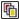

Быстрые ссылки на процедуры, описанные на этой странице:
• |
• |
• |
• |
Можно выполнить предварительный просмотр работы, чтобы узнать размер задания на печать и способ его размещения на бумаге. Для более детального просмотра можно сделать область крупнее. Можно просматривать отдельные цветоделения, которые будут распечатаны.
Перед печатью работы можно просмотреть сводку проблем задания на печать для выявления потенциальных проблем печати. Например, можно проверить текущее задание на печать на предмет ошибок, возможных проблем с печатью и предложений по решению проблем.
| Предварительный просмотр задания на печать |
• |
Выберите пункт Файл |
Чтобы закрыть предварительный просмотр печати, выберите пункт Файл |
Можно быстро выполнить предварительный просмотр в диалоговом
окне Печать, выбрав пункт Файл |
| Увеличение страницы просмотра |
1. |
Выберите Файл |
2. |
Выберите пункт Вид |
3. |
Выберите параметр Процент и введите значение в поле.
|
Страницу просмотра можно также увеличить, выбрав заготовку
уровня масштабирования.
|
Можно также увеличить только часть просматриваемого документа,
выбрав инструмент Масштаб в наборе инструментов и выделив
область рамкой.
|
| Предварительный просмотр цветоделений |
1. |
Выберите Файл |
2. |
На панели свойств нажмите кнопку Включить цветоделения .
|
Можно выполнить предварительный просмотр совмещенных цветов,
выбрав пункт Вид |
Можно также просматривать отдельные цветоделения, выбирая
вкладки внизу окна приложения.
|
| Просмотр сводки проблем задания на печать |
1. |
Выберите пункт Файл |
2. |
Перейдите на вкладку Подготовка.
|
Если проблемы с заданием на печать отсутствуют, с именем вкладки отображается сообщение Нет проблем. Если проблемы существуют, с именем вкладки отображается число найденных проблем. |
Если требуется исключить определенные проблемы при подготовке, нажмите кнопку Настройка, дважды щелкните пункт Печать и снимите флажки, соответствующие проблемам, которые необходимо пропустить. |
Для сохранения параметров нажмите кнопку Добавить параметры
подготовки |
Copyright 2012 Corel Corporation. Все права защищены.